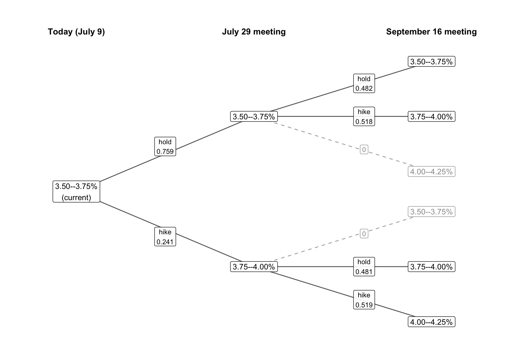

| Purpose | Repaid | Defaulted | Total |
|---|---|---|---|
| Debt consolidation | 41,278 | 8,131 | 49,409 |
| Home improvement | 5,139 | 717 | 5,856 |
| Small business | 2,369 | 822 | 3,191 |
| Total | 48,786 | 9,670 | 58,456 |
14 Probability Distributions for Multiple Random Variables
Perhaps more often than not we’re interested in how multiple random variables move together; this section introduces joint probability distributions for multiple random variables, sticking to the bivariate case for now.
Every object here — joint, marginal, and conditional probabilities — has an exact analog to the proportions we computed from data in Section 6.2, and the arithmetic is the same. Many students find these calculations natural when looking at a table of counts, but more difficult when the table represents an abstract probability distribution. If that’s you, it may be helpful to work through the examples in Section 6.2 in parallel with the examples below.
14.1 Joint probability distributions
For two discrete random variables, a joint probability distribution assigns a probability to every pair of outcomes. Laid out as a table — one variable in the rows, the other in the columns — it follows the same rules as any distribution: every cell is non-negative, and all the cells together sum to one (as they represent all the possible outcomes).
The LendingClub data from Section 6.2 recorded whether each loan was fully paid or charged off. The table below contains the historical counts for the three purposes we examined there.
Let \(P\) code the purpose of a future loan: \(P=1\) for debt consolidation, \(P=2\) for home improvement, and \(P=3\) for small business. The numbers are labels, not quantities; they let us represent a categorical outcome with a numerical random variable. Let \(D\) be the loan’s eventual default indicator. We will use the historical relative frequencies as a probability model for that loan: the probability assigned to each purpose–outcome pair is its count divided by 58,456. For example,
\[ \Pr(\text{small business and default}) = \Pr(P = 3 \text{ and } D = 1) = \frac{822}{58,456} = 0.014. \]
Dividing each of the six interior counts by 58,456 produces the complete joint distribution:
| Purpose | Repaid (D = 0) | Default (D = 1) | Total |
|---|---|---|---|
| Debt consolidation | 0.706 | 0.139 | 0.845 |
| Home improvement | 0.088 | 0.012 | 0.100 |
| Small business | 0.041 | 0.014 | 0.055 |
| Total | 0.835 | 0.165 | 1.000 |
Read this table exactly as you read the joint proportions in Section 6.2. The interior cells answer “and” questions about a future loan. The margins are the one-variable distributions, and they come from Rule 3 in Section 11.2. Adding the small-business counts, or the corresponding model probabilities, gives
\[ \Pr(P = 3) = \frac{3,191}{58,456} = 0.055. \]
This is the marginal probability of a small-business purpose under the model. Summing the default column gives the marginal default probability:
\[ \Pr(D = 1) = \frac{9,670}{58,456} = 0.165. \]
The marginal distribution of \(D\) answers “what is the default probability for a future loan before we know its purpose?” But it deliberately averages over purposes, and we know from the data chapters that purpose matters. The sharper question is conditional: given that the loan is for a small business, what is the chance it defaults?
14.2 Conditional probability
NoteDefinition: Conditional probability
For events \(A\) and \(B\) with \(\Pr(B) > 0\), the conditional probability of \(A\) given \(B\) is
\[ \Pr(A \mid B) = \frac{\Pr(A \text{ and } B)}{\Pr(B)}. \]
The bar “\(\mid\)” reads “given that” or “conditional on.”
In words: to condition on \(B\), keep only the probability that is consistent with \(B\), and rescale it so it sums to one again. The formula is the joint probability of both events divided by the marginal probability of the thing you’re conditioning on — exactly the joint-over-marginal arithmetic we did with proportions in Section 6.2, now stated as a definition.
On the table, conditioning is a two-step procedure: keep the row or column consistent with the condition, then renormalize the remaining probabilities by dividing by their total. Conditioning on “small business” keeps only that row. Dividing its default count by its row total gives
\[ \Pr(D = 1 \mid P = 3) = \frac{822}{3,191} = 0.258. \]
The joint-over-marginal calculation from the probability model gives the same answer:
\[ \frac{822 / 58,456} {3,191 / 58,456} = \frac{822}{3,191} = 0.258. \]
The common grand total cancels. Count over count and joint probability over marginal probability are two forms of the same calculation.
Unlike joint probabilities, conditional probabilities are asymmetric: in general, \(\Pr(A \mid B) \neq \Pr(B \mid A)\). For example, the probability you’re a professional basketball player given that you’re taller than average is minuscule. But the probability you’re taller than average given that you’re in the (W)NBA is close to one. Most tall people aren’t in the NBA, but most people in the NBA are tall, and that difference in base rates (marginal probabilities) produces the difference. Mathematically, \[ \Pr(\text{NBA} \mid \text{tall}) = \frac{\Pr(\text{NBA and tall})}{\Pr(\text{tall})}, \qquad \Pr(\text{tall} \mid \text{NBA}) = \frac{\Pr(\text{NBA and tall})}{\Pr(\text{NBA})}. \]
Roughly half of people are taller than average in most populations, so the first conditional divides a tiny joint probability by about 0.5 and stays tiny. The second divides that same joint probability by the vanishingly small chance of being in the NBA at all, producing a conditional probability near 1.
Revisiting our loan example, \(\Pr(D = 1 \mid P = 3) = 0.258\) is larger than the marginal default probability of 0.165. The reverse conditioning is much smaller:
\[ \Pr(P = 3 \mid D = 1) = \frac{822}{9,670} = 0.085. \]
Small-business loans account for only 5.5% of the loans, so even though they default at a higher rate than the other types, they account for a small fraction of the defaulted loans. For the same reason, most defaults are debt-consolidation loans:
\[ \Pr(P = 1 \mid D = 1) = \frac{8,131}{9,670} = 0.841, \]
even though their default rate is lower:
\[ \Pr(D = 1 \mid P = 1) = \frac{8,131}{49,409} = 0.165. \]
14.2.1 The Fed’s two meetings, jointly
In the introduction we drew a branching tree to represent the different paths the FOMC could take over two meetings under the CME FedWatch probabilities. Each branch represented a pair of future outcomes (the target rate after the July and September meetings), and each path has a probability attached to it. These are joint probabilities; the table below lists them. Let \(X\) be the target-range midpoint after July and \(Y\) the midpoint after September.
| July \ September | 3.50–3.75% | 3.75–4.00% | 4.00–4.25% | July marginal |
|---|---|---|---|---|
| 3.50–3.75% | 0.366 | 0.393 | 0.000 | 0.759 |
| 3.75–4.00% | 0.000 | 0.116 | 0.125 | 0.241 |
| September marginal | 0.366 | 0.509 | 0.125 | 1.000 |
The margins are the two single-meeting distributions we have used since the introduction. They are marginal probabilities. The marginal probabilities for each possible target after the September meeting come from summing the probabilities attached to every path that gets us there. For example, the market can arrive at a September target range of 3.75–4.00% two ways: hold in July then hike in September (probability 0.393), or hike in July then hold in September (probability 0.116). Summing over both paths,
\[ \Pr(Y = 3.875) = 0.393 + 0.116 = 0.509. \]
Applying the definition across a whole row gives a conditional distribution. Fix a July outcome, then renormalize its row to produce a complete probability distribution for September. Given a July hold, the September distribution is the top row divided by 0.759: probability \(0.366 / 0.759 = 0.482\) of holding again and \(0.393 / 0.759 = 0.518\) of a hike. Given a July hike, dividing the bottom row by 0.241 gives \(0.481\) for holding and \(0.519\) for a second hike. If those four numbers look familiar, they should: they are precisely the September branch labels on the tree we first saw as Figure 10.1 in Section 10.1:

A probability tree is a joint distribution organized by conditioning, with marginal probabilities on the first fan of branches and conditional probabilities after. Multiplying down the branches recovers the joint probabilities above — the connection between branches and totals promised back in the introduction. The joint probability table and the tree above represent the same information organized in different ways, and we can always move back and forth between them.
14.3 Independence
We have introduced correlation and covariance as measures of linear association — dependence — but we haven’t explicitly defined what we mean by “dependence” in the first place. We define independence in terms of the joint distribution of two variables. Any pair of variables that don’t satisfy the property below are dependent in some way.
NoteDefinition: Independent random variables
Random variables \(X\) and \(Y\) are independent if
\[ \Pr(X = x \text{ and } Y = y) = \Pr(X = x) \times \Pr(Y = y) \]
for every pair of outcomes \(x\) and \(y\) — the joint distribution is the product of the marginals. Equivalently, \[ \Pr(X = x \mid Y = y) = \Pr(X = x)\text{ and } \Pr(Y = y \mid X = x) = \Pr(Y = y) \]
whenever the conditioning event has positive probability.
Intuitively, the marginal distribution of \(X\) tells us about which values of \(X\) are more or less likely, before we know anything else. The conditional probability \(\Pr(X=x\mid Y=y)\) tells us how likely \(X=x\) is after we learn that \(Y=y\). If the two are independent, learning \(Y\)’s outcome changes nothing about \(X\)’s distribution, and vice versa, so the conditionals match the marginals.
We saw this empirically in Section 6.3: household income told us almost nothing about national economic outlook — the distribution of the economic outlook variable was almost the same for participants in each income level as it was overall.
The Fed meetings fail this definition decisively, largely because of how CME constructs its probability tree. The only way to reach the 4.00–4.25% range by September is two successive hikes, so learning that September landed there pins July down completely. The product form fails wherever the joint table has a zero — under independence, the July-hold, September-4.00–4.25% cell would be \(0.759 \times 0.125 = 0.095\), not zero.
14.4 Covariance and correlation for random variables
For quantitative random variables we can use the same two summaries we used for paired data columns — covariance and correlation — rebuilt with probability weights.
Like their data counterparts, the covariance and correlation of random variables measure linear association between two variables. Their formulas replace empirical averages with expected values, just like the mean and variance calculations in Section 12.1 and Section 12.3.
NoteDefinition: Covariance and correlation of random variables
For random variables \(X\) and \(Y\) with means \(\mu_X\) and \(\mu_Y\), the covariance is the expected product of their deviations:
\[ \text{Cov}(X, Y) = E\big[(X - \mu_X)(Y - \mu_Y)\big] = \sum_{\text{pairs } (x,\, y)} \Pr(X = x \text{ and } Y = y)\,(x - \mu_X)(y - \mu_Y), \]
and the correlation rescales it to a unitless number between \(-1\) and \(+1\):
\[ \text{Corr}(X, Y) = \frac{\text{Cov}(X, Y)}{SD(X)\,SD(Y)}. \]
In words: for every possible pair of outcomes, ask whether \(X\) and \(Y\) land on the same side of their respective means, multiply the two deviations, and average with probability weights. The quadrant logic from the scatterplot chapter transfers wholesale — pairs that agree (both above or both below their means) push the covariance up, pairs that disagree pull it down.
As an example let’s compute the correlation between rates at the July and September meeting under the CME FedWatch model. The means are the expected rates from the parameters chapter, \(\mu_X = 3.685\) and \(\mu_Y = 3.815\). Four cells carry probability, and each contributes a signed product:
| Path | Probability | July deviation | September deviation | Contribution |
|---|---|---|---|---|
| 3.50–3.75% then 3.50–3.75% | 0.366 | -0.060 | -0.190 | 0.00418 |
| 3.50–3.75% then 3.75–4.00% | 0.393 | -0.060 | 0.060 | -0.00143 |
| 3.75–4.00% then 3.75–4.00% | 0.116 | 0.190 | 0.060 | 0.00133 |
| 3.75–4.00% then 4.00–4.25% | 0.125 | 0.190 | 0.310 | 0.00736 |
| Covariance (sum) | 0.01144 |
Three of the four paths agree — hold-then-hold sits below both means, and the two hike paths sit above both — while the hold-then-hike path splits the difference and contributes the lone negative term. The sum is positive. Applying the variance formula from Section 12.3 to the two marginal distributions gives \(SD(X) = 0.107\) and \(SD(Y) = 0.164\). Rescaling by those standard deviations gives
\[ \text{Corr}(X, Y) = 0.65. \]
A correlation of 0.65 is a strong positive linear relationship, and it has a clean economic reading: rate changes persist. A July hike raises the floor under every path that follows, pulling September up with it. The correlation and the standard deviations answer different questions: the correlation says July and September move together tightly; the standard deviations say how much each meeting’s outcome varies on its own.
Independence and correlation connect the way you would hope: if \(X\) and \(Y\) are independent and their correlation is defined, their correlation is exactly zero. Independence lets the expected product split into the product of two expected deviations, and both are zero. The reverse implication fails — zero correlation does not guarantee independence — but manufacturing a counterexample takes a contrivance we’ll save for later.